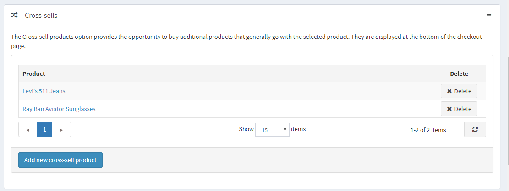
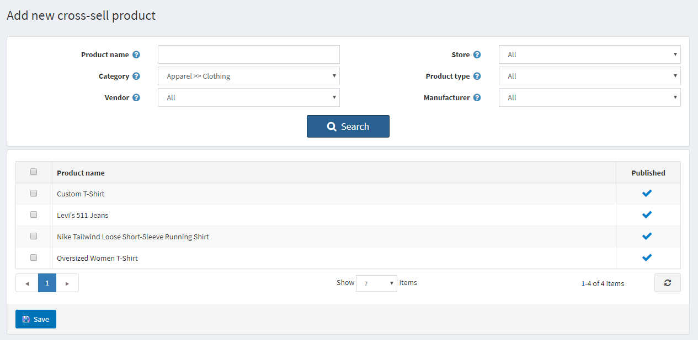
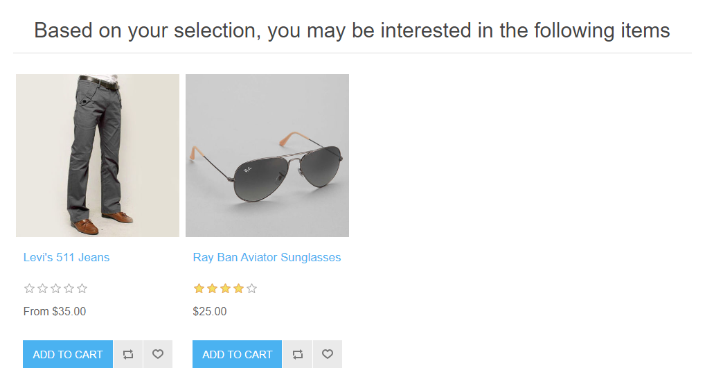
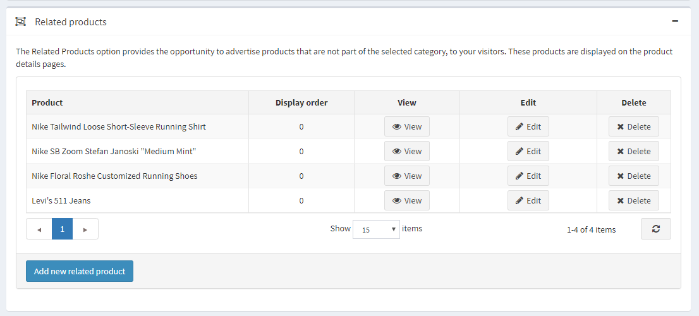
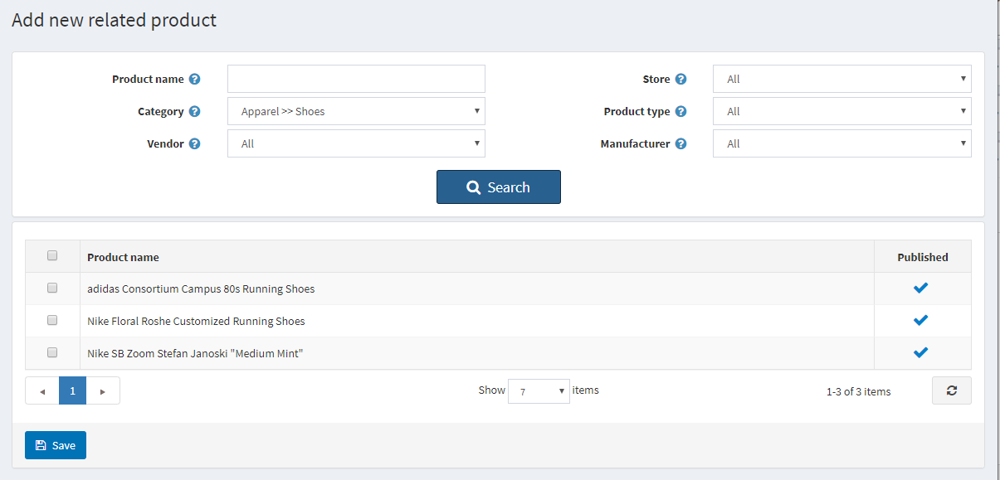
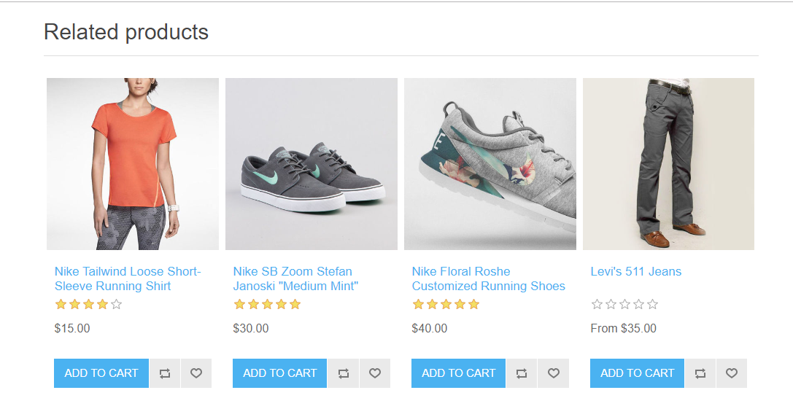

Cross-sells and related products
"Cross-sells" and "Related products" are marketing tools in nopCommerce that can be used to offer your customers additional products they may like based on their shopping behavior (viewing and adding certain products to the cart). It is also a good opportunity for you to up-sell some products. You can use both these tools simultaneously.
You can set up cross-sells and related products when creating or editing a product on the product edit page. Go to Catalog → Products, select a product, and click Edit. Find the Cross-sells and Related products panels.
Note
You need to save the product before you can add cross-sells and related products.
Cross-sells
The "cross-sell products" option provides an opportunity to sell additional products that are usually bought with the selected product; however, you can add any product from your catalog, even those not complementary to the product in the cart. Cross-sells are displayed at the bottom of the checkout page. For example, when your customer is buying a CPU, they might need a monitor and something else. You can add an unlimited number of cross-sell products to a product.

Adding new cross-sells
Click Add new cross-sell product and choose product(s) from the catalog. You can use the following criteria: Product name, Category, Vendor, Store, Product type, and Manufacturer to find a product easily.

After you have chosen a cross-sell product and saved it, you can check how cross-sells will be displayed on the checkout page:

Related products
The Related Products option provides an opportunity to advertise and up-sell other products to your customers together with the chosen one. These products are displayed below the selected product on the product details page. You can add an unlimited number of related products to a product.

Adding new related products
Click Add new related product and choose product(s) from the catalog. You can use the following criteria: Product name, Category, Vendor, Store, Product type, and Manufacturer to find a product easily.

After you have chosen a related product and saved it, you can check how related products will be displayed on the product details page:
